1925
المنع الذي لم يُنهِ الخطر
حظر بروتوكول جنيف استخدام الوسائل البكتريولوجية في الحرب. لكن حظر الاستخدام لم يكن وحده نظاماً شاملاً لمنع التطوير والإنتاج.
اللجنة الدولية للصليب الأحمر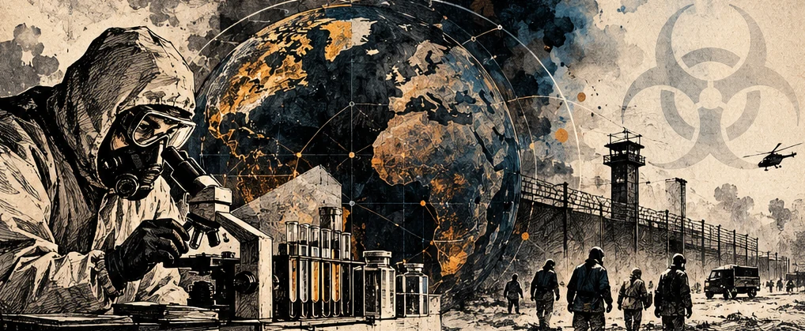
نخاف الوميض الذي يسبق الانفجار. لكن التاريخ يحفظ جرائم بدأت بلا صوت، وبقيت آثارها في أجساد البشر وفي ملفات لم تُفتح للعدالة.
ادخل إلى الملفالسؤال الأول
يحتاج السلاح النووي إلى قدرات صناعية هائلة، وتترك مشروعاته آثاراً يمكن رصدها. أمّا إساءة استخدام البيولوجيا فتمثل تحدياً مختلفاً: المادة نفسها قد تُدرس لعلاج مرض أو يُساء استخدامها للإيذاء. لهذا يصعب الحكم من وجود مختبر أو عيّنة على وجود برنامج تسليح.
لكن الخطر ليس اختراعاً. فقد عرف القرن العشرون تجارب قسرية على البشر وهجمات بيولوجية موثّقة. ثم جاءت اتفاقيات دولية تحظرها، من دون أن تنجح حتى اليوم في بناء نظام تفتيش دوري ملزم شبيه بما لدى اتفاقيات أخرى.
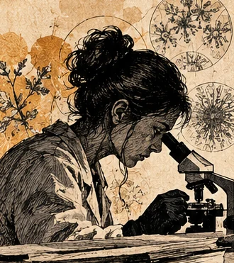
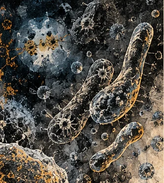
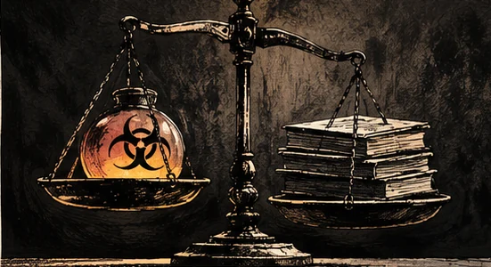
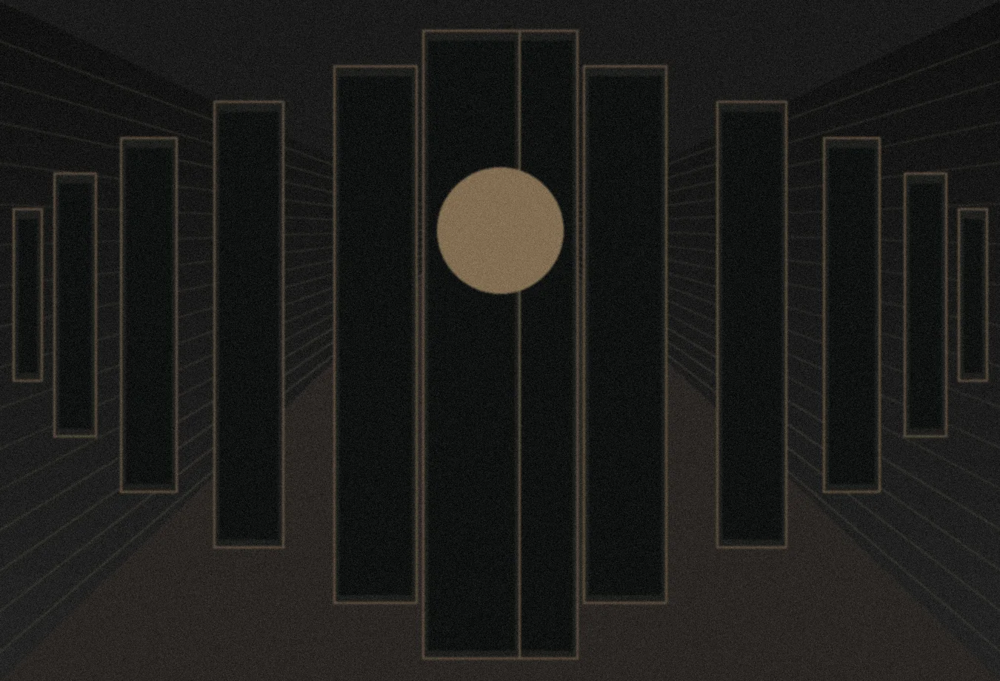
توفيت داريا شيبيلوفا، البالغة 28 عاماً والعاملة في معهد إيركوتسك لمكافحة الطاعون، في مستشفى شيليخوف ليلة الأول والثاني من تشرين الأول 2026، بعد إصابتها بالتهاب رئوي شديد لم يُحدّد سببه. أعقبت الوفاة إجراءات احترازية وفحوص للمخالطين. المركز الأوروبي للوقاية من الأمراض
انتشرت رواية عن كسر أنبوب يحتوي على بكتيريا الطاعون، لكنها لم تُثبت. وفي 10 تشرين الأول 2026، أفادت منظمة الصحة العالمية بأن السلطات الروسية نفت وقوع حادث سلامة بيولوجية، وأبلغت عن فحوص سلبية للعوامل الممرضة عالية الخطورة لدى العاملة والمخالطين. ولم تحدّد الفحوص سبب الوفاة، ولم تجد المنظمة دليلاً على انتقال مستمر مرتبط بالحادثة. ويؤكد تحديث المركز الأوروبي في 12 تشرين الأول أن الوقائع المتاحة لا تثبت إصابة بالطاعون.
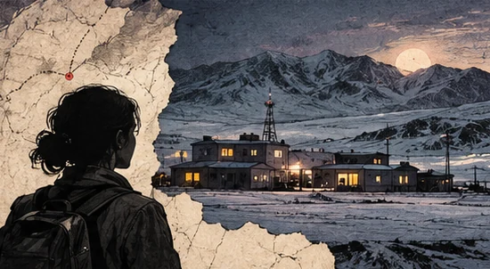
هذه وقائع يمكن تتبعها في التحديثات الصحية والتغطيات الموثقة. وهي لا تثبت وقوع تسرّبٍ بيولوجي.
روايات متداولة لم تجد تأكيداً مستقلاً. لا يجوز تحويل الاحترازات الصحية إلى دليل على هذه الاتهامات.
المراجع: منظمة الصحة العالمية، 10 تشرين الأول، المركز الأوروبي، 12 تشرين الأول، رويترز، 6 تشرين الأول.
ما لا يختلف عليه التاريخ
أحياناً لا يبدأ الانحراف من جهلٍ بالعلم، بل من قرار سياسي بإخراج الإنسان من حساباته. وهذا ما تكشفه تجربة الوحدة 731 في اليابان الإمبراطورية.
حظر بروتوكول جنيف استخدام الوسائل البكتريولوجية في الحرب. لكن حظر الاستخدام لم يكن وحده نظاماً شاملاً لمنع التطوير والإنتاج.
اللجنة الدولية للصليب الأحمرأدار شيرو إيشي برنامجاً عسكرياً سرياً في شمال شرق الصين المحتلة. استخدمت الوحدة سجناء في تجارب وحشية، وارتبط برنامجها بهجمات بيولوجية على مدنيين. لا تحتاج هذه الجريمة إلى أرقام غير موثقة كي يثبت فدحها.
American Entomologist، جامعة أكسفورد للنشر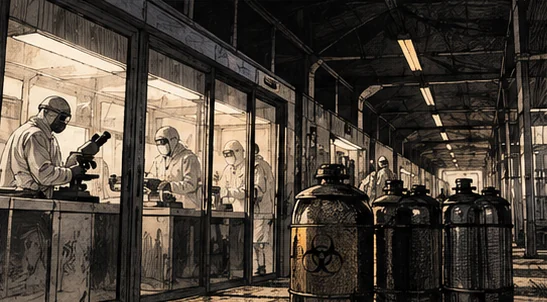
بعد الحرب، حصل قادة وعاملون في الوحدة على حصانة من الملاحقة الأمريكية مقابل بيانات برنامجهم. تحوّلت نتائج الانتهاكات إلى أوراق استخباراتية، وبقي كثير من الضحايا بلا إنصاف.
دراسة أكاديمية عن الوحدة 731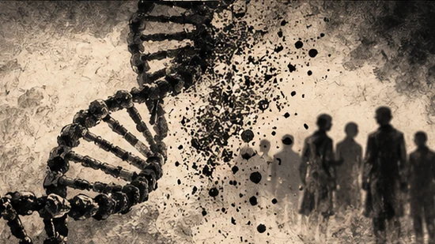
فتحت اتفاقية الأسلحة البيولوجية للتوقيع عام 1972، ودخلت حيز النفاذ عام 1975. حظرت تطوير الأسلحة البيولوجية وإنتاجها وحيازتها وتخزينها. لكنها افتقرت إلى نظام تحقق دولي ملزم.
وزارة خارجية النمسا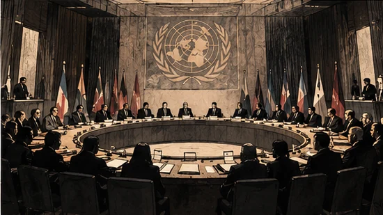
المعرفة التي لا تحمي كرامة الإنسان، تستطيع أن تصبح أداة لانتزاعها.
خلاصة تحريرية مستمدة من وقائع الوحدة 731، وليست اقتباساً تاريخياً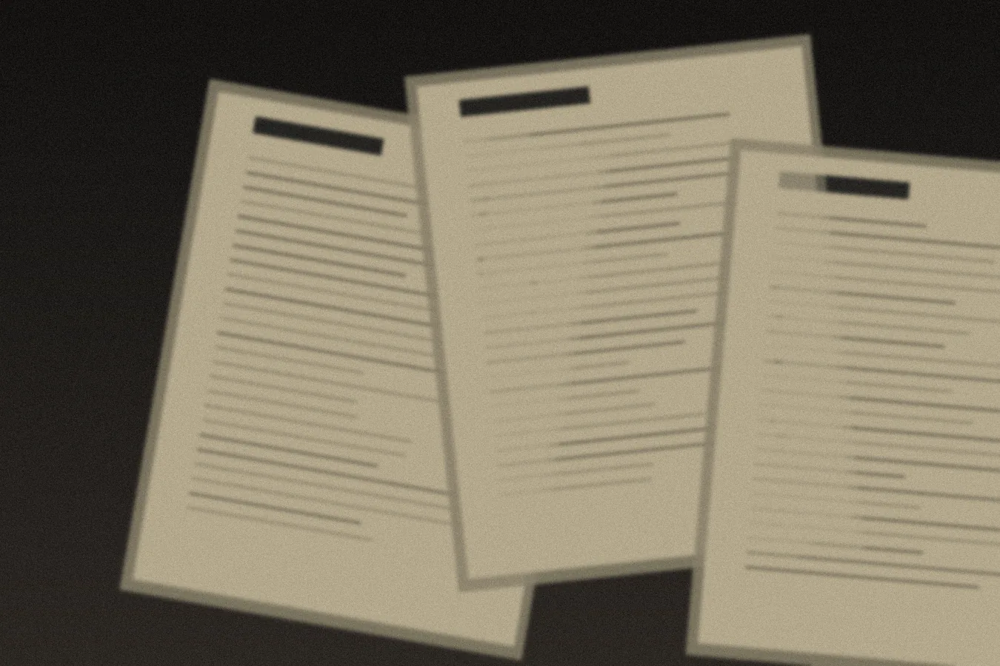
تصوّر بصري · أرشيف رمزي غير تاريخيالثمن الأخلاقي
الصفقة التي حصل بموجبها بعض قادة الوحدة 731 على حصانة تضع السؤال في موضعه الأصعب: لم تكن المشكلة نقص المعلومات عن الجريمة، بل القرار السياسي بشأن مصير مرتكبيها.
تحمل الملفات معلومات عن التجارب. لكنها تحمل أيضاً أثراً لا تقيسه التقارير: أشخاصاً حُوّلوا إلى مواد اختبار، ثم غابوا عن ميزان المساءلة. دراسة تاريخية منشورة، 2023
ثغرة لا تزال قائمة
تحظر اتفاقية الأسلحة البيولوجية هذا النوع من التسليح. لكن الرقابة المؤسسية تختلف عن رقابة البرامج النووية المعلنة أمام الوكالة الدولية للطاقة الذرية أو نظام تفتيش الأسلحة الكيميائية. لم تنجح المفاوضات الدولية عام 2001 في إنشاء بروتوكول تحقق ملزم للاتفاقية البيولوجية.
تلتزم الدول الأطراف بعدم تطوير الأسلحة البيولوجية أو إنتاجها أو حيازتها لأغراض عدائية. وتوجد تدابير لبناء الثقة وسبل لإثارة المخاوف بين الدول.
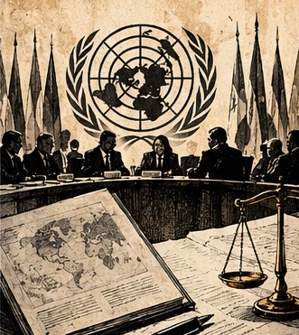
المراجع: وزارة خارجية النمسا، مجلة الأمراض المعدية الناشئة، 2025.
المرض الحقيقي خارج الاستعارة
تسببه بكتيريا Yersinia pestis. ومن أشكاله الطاعون الدملي والرئوي. ويمكن للشكل الرئوي أن ينتقل بين البشر في ظروف المخالطة القريبة عبر الرذاذ التنفسي، لكنه ليس مرضاً ينتشر حتماً بمجرد سماع خبر تسرّب. يُنقذ التشخيص المبكر والعلاج بالمضادات الحيوية حياة المصابين.
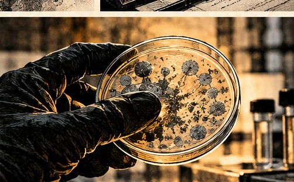
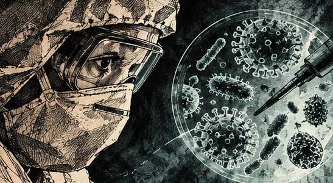
ماذا استُبعد من النص الأصلي؟
لم نعتمد أرقام الضحايا والجرعات والسيناريوهات الكارثية الواردة في المادة الأصلية من دون سند أولي يمكن مطابقته. ولم ننسب اقتباسات مثيرة إلى شخصيات تاريخية حين لم نثبت نصها الأصلي. كما لم نعرض حادثة شيليخوف دليلاً على وجود سلاح بيولوجي.
المقارنة مع السلاح النووي لا تحتمل حكماً مطلقاً عن أيهما أشد فتكاً. فالأثر يتغير باختلاف العامل البيولوجي والظروف والاستجابة الصحية، ولا يمكن تحويل نموذج افتراضي إلى حقيقة عامة.
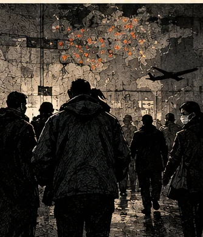
الحقيقة المستندة إلى دليل تبقى أخطر من رواية لا نعرف مصدرها.
السؤال الأخير
حين تتقاطع المختبرات والسياسة والأمن، لا تكفي الطمأنة ولا يكفي الذعر. المطلوب معلومات يمكن فحصها، ومساءلة لا تترك الضحايا خارج السجل.
مراجع مؤسسية وعلمية وصحفية استُخدمت للتحقق، مع رابط لتحديث المركز الأوروبي. بعض الروابط خارجية وتحتاج اتصالاً بالإنترنت.
المادة الأساسية: النص الذي قدّمه صاحب الطلب. صيغ هذا الموقع تحريرياً بعد استبعاد ادعاءات لم يمكن تثبيتها. الصور المعروضة تصوّرات فنية أصلية، وليست صوراً تاريخية.